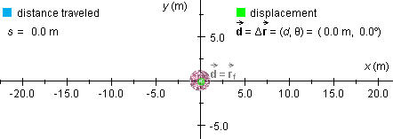
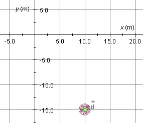
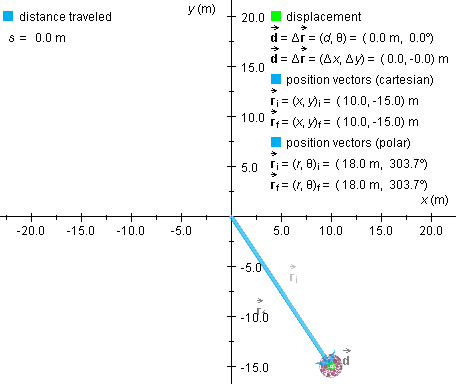
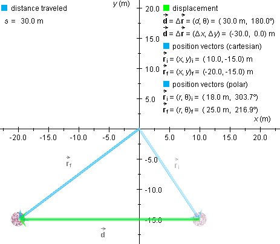
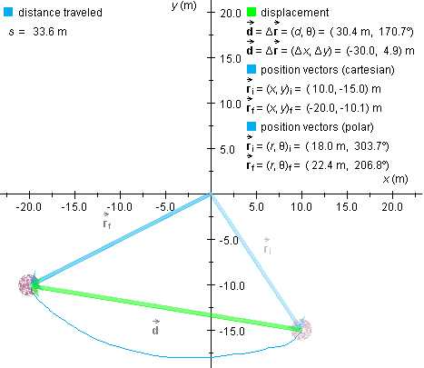

.
.
This page is designed to get you started using the applet. The applet should be open. The step-by-step instructions on this page are to be done in the applet. You may need to toggle back and forth between instructions and applet if your screen space is limited.
Press the Reset button .

A red ball will be at the origin of an (x,y)-coordinate system.
The green dot at the center of the ball represents a zero
displacement of the ball. The displacement is labeled  , in boldface and with an arrow above the
d to indicate that displacement is a vector quantity.
, in boldface and with an arrow above the
d to indicate that displacement is a vector quantity.
Another way to label a displacement, used in the snapshot above, is
D . This
expresses the fact that a displacement is a change in position vector.
About position vectors see under Position Vectors below. is the symbol for position vector.
. This
expresses the fact that a displacement is a change in position vector.
About position vectors see under Position Vectors below. is the symbol for position vector.
In the snapshot, where the ball is still at the origin, the ball's
initial position vector is 0 so the ball's displacement is equal to
the ball's final position vector, f, which happens to be 0 as well in this
case.
The column on the right, labeled "displacement", shows the
displacement to have magnitude
d equal to 0.0 m. The direction of the displacement, measured
by the angle q taken relative to the
positive x-axis in the positive sense (counter-clockwise), is
shown as 0.0o.
The column on the left, labeled "distance traveled", shows the distance traveled to be 0.0 m as well. The distance traveled is denoted by the symbol s.

Press the Set-Initial-Position button  . Then move the mouse cursor into the applet window. The
(x,y)-coordinates of the point to which the cursor
points will be shown. Move the cursor to (x,y) =
(10.0,-15.0) m and click the mouse. The ball is now fixed at this
initial position. You can also click the mouse button when the cursor
is at some other point and then drag with the mouse to the point you want
while keeping the mouse button pressed.
. Then move the mouse cursor into the applet window. The
(x,y)-coordinates of the point to which the cursor
points will be shown. Move the cursor to (x,y) =
(10.0,-15.0) m and click the mouse. The ball is now fixed at this
initial position. You can also click the mouse button when the cursor
is at some other point and then drag with the mouse to the point you want
while keeping the mouse button pressed.
You may find it easier to place the ball at (x,y) = (10.0,-15.0) m if you first display the coordinate grid. Reset the applet, press the Grid toggle button , and place the ball at (x,y) = (10.0,-15.0) m. The following image shows what you should see.

If the grid is still displayed, press the Grid button again to hide the grid. Then press the
Position-Vectors toggle button
to display the position vector pointing from the origin to the ball.
The vector is shown in blue and labeled i, in boldface and with an arrow above the
r like all vectors. The subscript "i" refers to "initial".
Since so far no displacement has taken place, the final position
vector f is equal to the
initial position vector. Therefore both vectors are represented by
the same blue arrow. The following snapshot shows what you should
see. (The label f overlaps
with the label "-10.0" on the y-axis.)

The snapshot also shows some additional data under "displacement"
on the right. To display these, press the Data toggle button  . Notice that under "position vectors
(cartesian)" the initial position vector i is listed with its
(x,y)-coordinates equal to (10.0,-15.0) m, and that
under "position vectors (polar)" the initial position vector is listed
with its magnitude equal to 18.0 m and direction angle q equal to 303.7o. In both cases, the
data are displayed in the form (... , ...) where the first and second
entry in the parentheses are x and y coordinates or
magnitude and direction angle, respectively. The angle is taken in
the positive sense (counter-clockwise) relative to the positive
x-axis.
. Notice that under "position vectors
(cartesian)" the initial position vector i is listed with its
(x,y)-coordinates equal to (10.0,-15.0) m, and that
under "position vectors (polar)" the initial position vector is listed
with its magnitude equal to 18.0 m and direction angle q equal to 303.7o. In both cases, the
data are displayed in the form (... , ...) where the first and second
entry in the parentheses are x and y coordinates or
magnitude and direction angle, respectively. The angle is taken in
the positive sense (counter-clockwise) relative to the positive
x-axis.
Also notice in the data column on the right that the final position vector is equal to the initial position vector and that the displacement and distance traveled are still zero.
With the initial position of the ball at
(x,y)i = (10.0,-15.0) m, press down the Shift
key and, while keeping this key pressed down, click on the ball and
drag it left to (x,y) = (-20.0,-15.0) m. Make
sure that you are pressing the Shift key before clicking on
the ball. If you display the position vectors and the data (see
preceding section titled "Position Vectors"), but not the grid, you
should see what is shown in the following snapshot. The displacement
vector is shown in green, the final
position vector f in blue,
and the initial position vector i in dimmed blue.

Notice that the value of the displacement vector shown in the
"displacement" column on the right is now non-zero. The magnitude of
the displacement is 30.0 m and the direction angle is
180.0o, while the (x,y)-coordinates, denoted
Dx and Dy, respectively, are shown to be equal to
-30.0 m and 0.0 m. Also, the final position vector is now shown to be
different from the initial position vector, with f = (x,y)f =
(-20.0,-15.0) m. The distance traveled s is shown as 30.0 m.
Note. In dragging the ball along a straight line by holding down the Shift key, it is important to drag steadily in one direction. Otherwise, the distance traveled s may show slight inaccuracies. Also, it is not easy to drag the ball to exactly (x,y)f = (-20.0,-15.0) m, or to any other specific final position, without overshooting the target point and retracing. Overshooting would again result in a value for s greater than the straight-line distance from the initial to the final point. You are well advised to not be concerned about small discrepancies in the values if you drag the ball only to approximately the correct position.
With the Shift key held down, you can also drag vertically or diagonally in a 45-degree direction.
When the Shift key is not held down, you can drag the ball along curved paths, as in the following snapshot. The path will be shown in blue. Note that now the distance traveled s = 33.6 m is noticeably larger than the magnitude d = 30.4 m of the displacement.
